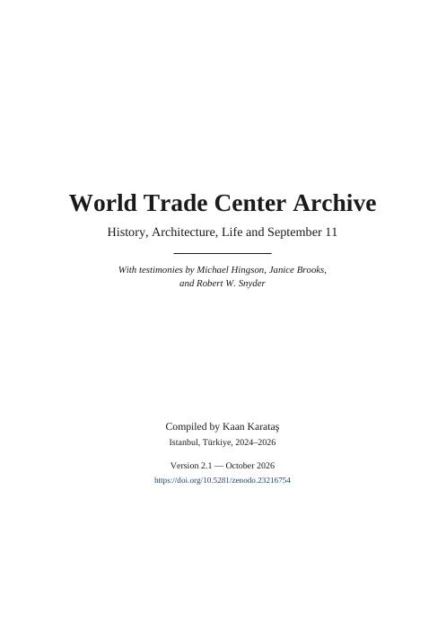

RESEARCH PROJECT · 01
World Trade Center
Archive.
History, architecture, everyday life, and September 11.

Open access · Version 2.2
Read the full archive
100 pages · 154 sources · three testimonies. Free PDF on Zenodo.
ABOUT THE PROJECT
The World Trade Center Archive is an independent documentary history of the World Trade Center. It brings together historical records, architectural research, and personal testimony to document the complex's history and the lives connected to it.
The archive includes testimonies from survivors Michael Hingson and Janice Brooks, and historian Robert W. Snyder.
A donation to Columbia University's oral history collections is in progress.
WHAT IS INSIDE
- The World Trade Center, 1966–2001
- The 1993 Bombing
- The Planning of the Attacks
- September 11, 2001
- Aftermath
- Remembrance and Rebuilding
- Conspiracy Claims and the Findings of the Investigations
- Conclusion
Plus a research methodology, 154 cited sources (primary, secondary, and visual), an archive record, and three original testimonies in Appendix B. 100 pages.
TESTIMONIES
- T-01 · Michael Hingson
Survivor of the North Tower, 78th floor. Written testimony, June 2026. - T-02 · Robert W. Snyder
Professor Emeritus, Rutgers University; Manhattan Borough Historian 2019–2025. Oral reflection, June 2026. - T-03 · Janice Brooks
Survivor of the South Tower, 84th floor. Written testimony, June 2026.
The testimonies are the words of their authors and are reproduced with their permission. They have not been edited.
HOW TO CITE
Karataş, K. (2026). World Trade Center archive: History, architecture, life and September 11 (Version 2.2). Zenodo. https://doi.org/10.5281/zenodo.24566263
The text is released under CC BY 4.0 ↗. Photographs keep the licenses stated in their captions.
ARCHIVE VERSION 2.2
Read and cite
the research.
The archive is openly available through Zenodo.
ONLINE ARCHIVE
Explore the project website for its timeline, personal testimonies, archive guide, and catalogue.
Visit the World Trade Center Archive ↗